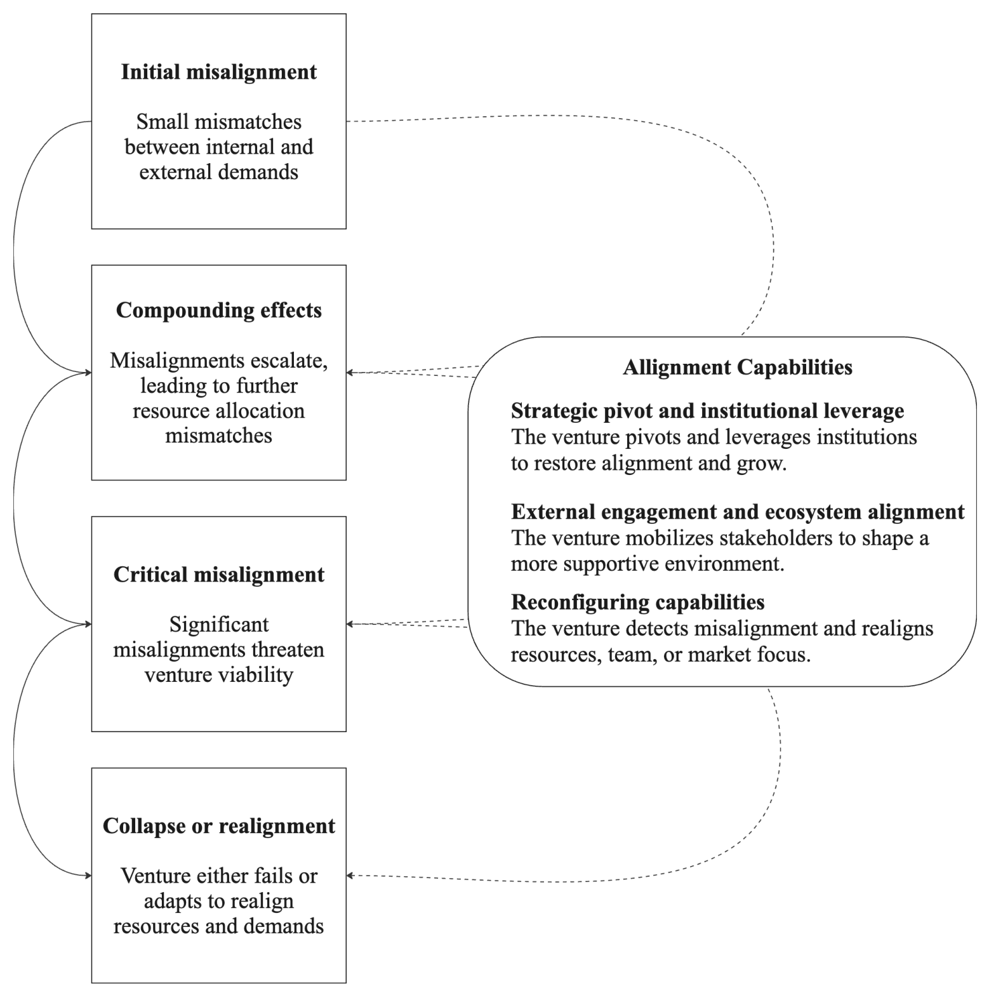
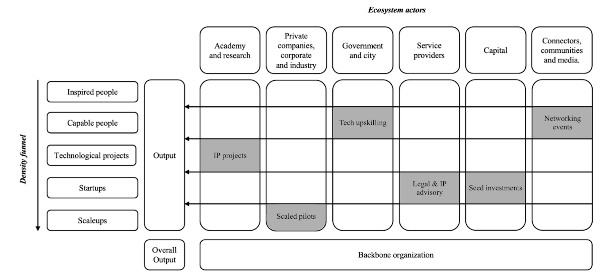

Metodología de diagnóstico de ecosistemas de emprendimiento por resultados.
Módulos
5
KPIs
228
OI Solutions
Sección 02
Para quién es este curso
Estas son las tres preguntas que cualquier tomador de decisión en un ecosistema necesita responder. CORE es el método para hacerlo con evidencia.
01
¿Quién participa en el ecosistema?
02
¿En qué etapa de desarrollo están las empresas que lo habitan?
03
¿Qué resultado está generando cada actor en cada etapa?
Sección 03
Qué vas a aprender
Seis conceptos y competencias que vas a dominar al terminar el curso.
01
Qué es el modelo CORE
El Embudo de Densidad de Innovación
La Matriz Actor × Etapa
Los 228 indicadores de resultado
02
Arquitectura CORE completa
8 actores del ecosistema
7 etapas del embudo
El Backbone de gobernanza
La Matriz Actor × Etapa
03
228 KPIs en campo
Seleccionar indicadores del catálogo curado
Aplicarlos en diagnósticos de campo reales
04
Proceso de diagnóstico en 6 fases
Diseñar el proceso por tipo de actor
Ejecutar con instrumentos concretos
05
Brechas con evidencia verificable
Identificar brechas del ecosistema
Documentarlas con datos, no con percepciones
06
Informe CORE completo
Heatmap de salud del ecosistema
Diagnóstico de brechas
Recomendaciones priorizadas
Sección 04
Lo que vas a poder entregar
Cuando terminas CORE y completas tu primer diagnóstico, tienes cuatro entregables concretos para presentar a cualquier actor del ecosistema.
01
Heatmap de salud del ecosistema
Mapa visual del estado de cada actor en cada etapa del embudo
Lectura de un vistazo del ecosistema hoy
Listo para presentar a cualquier actor del ecosistema
02
Diagnóstico de brechas
Dónde falla el ecosistema, qué actor falla y en qué etapa
Por qué falla, con datos verificables
Soportado por los 228 KPIs del catálogo CORE
03
Recomendaciones priorizadas
Listado de intervenciones específicas
Ordenadas por impacto y viabilidad
Plan de acción basado en evidencia, no una lista de deseos
04
Plan de monitoreo continuo
Indicadores para seguir midiendo después del diagnóstico
Cadencia de actualización por tipo de actor
Punto de partida para el siguiente ciclo de gobernanza
Sección 05
Mapa de aprendizaje
La ruta completa del Curso Guiado CORE, de la brecha conceptual a los KPIs del ecosistema.
APT
Sobre el curso
El método, los perfiles y la ruta
M1
MÓD 1
El ecosistema que no se mide
M2
MÓD 2
Conoce el Modelo CORE
M3
MÓD 3
Los KPIs del Ecosistema
Sección 06
Tu primer ejercicio
Antes de entrar a la sección de El ecosistema que no se mide, dedica 5 minutos a este ejercicio. Introduce el formato que se repetirá en cada módulo.
Actividad 0Punto de partida: tu ecosistema
Antes de continuar, dedica 5 minutos a responder estas 3 preguntas sobre el ecosistema que vas a diagnosticar:
01
¿Qué ciudad, región o sector vas a diagnosticar?
02
¿Qué tipos de organizaciones o personas participan en ese ecosistema? (Escribe los que te vengan a la mente sin buscar.)
03
¿Cuál crees que es la brecha principal de ese ecosistema? (Una hipótesis está bien. Es tu punto de partida.)
No hay respuesta correcta. Este ejercicio es tu baseline: al terminar el curso, vas a poder responder estas mismas preguntas con datos.
EL ECOSISTEMA QUE NO SE MIDE · Sección 1
Qué es un ecosistema de emprendimiento
Cuando hablamos de un ecosistema de emprendimiento, no hablamos de una lista de actores. Un ecosistema es un sistema de relaciones. Las universidades, los fondos de capital, las aceleradoras y el gobierno ya existen en la mayoría de las ciudades. El problema no es su existencia. Es cómo se relacionan, qué información comparten y a quién apoyan en qué momento.
Tres definiciones de la literatura académica capturan esto con precisión:
01
Isenberg (2010)
Un ecosistema es el conjunto de instituciones, organizaciones, individuos y condiciones culturales que interactúan para promover o inhibir la actividad emprendedora. Isenberg identificó seis dominios que lo componen: política pública, financiamiento, cultura, redes de apoyo, capital humano y mercados. Cada dominio influye en los demás. No hay un ecosistema fuerte si uno de los seis dominios está ausente.
02
Spigel (2017)
Los ecosistemas tienen tres tipos de atributos que coevolucionan con la actividad emprendedora: culturales (tolerancia al riesgo, historias de emprendedores que inspiran a otros), sociales (redes de mentores, relaciones de confianza entre actores) y materiales (capital de inversión, talento especializado, infraestructura tecnológica). Estos atributos no se construyen de la noche a la mañana. Se acumulan a lo largo del tiempo a través de interacciones repetidas.
03
Adner (2017)
Un ecosistema es una estructura de alineación. Para que una empresa de base tecnológica cree y entregue valor, necesita que múltiples actores coordinen sus acciones en el momento correcto. Si esa coordinación falla, el valor no se genera, aunque cada actor por separado esté haciendo bien su trabajo. El ecosistema no es la suma de sus partes: es la calidad de las interacciones entre ellas.
La implicación para el diagnóstico
Si un ecosistema es un sistema de relaciones e interacciones, diagnosticarlo requiere algo más que contar cuántos actores existen o cuántas actividades realizan. Requiere medir si las interacciones correctas ocurren en el momento correcto del desarrollo de las empresas. Eso es exactamente lo que CORE hace.
EL ECOSISTEMA QUE NO SE MIDE · Sección 2
Lo que la literatura ya sabía y lo que faltaba
La literatura académica de los últimos 20 años ha desarrollado más de 28 marcos teóricos y modelos específicos sobre ecosistemas de innovación y emprendimiento. La revisión sistemática realizada en la investigación doctoral los organizó en seis categorías (Sánchez-Domínguez & Almanza-Rueda, 2025, §4.5):
01
Modelos basados en actores
Mapean quién participa en el ecosistema. Definen roles: universidad, gobierno, empresa privada, fondos. Son útiles para identificar actores, pero no explican qué hace cada uno ni en qué momento debe intervenir.
02
Sistemas de innovación
Explican cómo fluye el conocimiento entre instituciones, universidades y empresas. Describen bien las condiciones estructurales del ecosistema, pero no capturan el impacto en las trayectorias individuales de las empresas de base tecnológica.
03
Modelos de proceso
Describen las etapas por las que pasan las empresas: idea, prototipo, validación, escala. Son útiles para entender el recorrido de una empresa individual, pero no conectan esas etapas con el rol específico que debe jugar cada actor del ecosistema en cada una.
04
Modelos de creación de valor
Analizan cómo el ecosistema genera y distribuye valor económico. Relevantes para política pública y rendición de cuentas, pero operan a nivel macro y no permiten ver qué sucede en el nivel de las empresas individuales ni en las intersecciones actor-etapa.
05
Flujos de conocimiento
Estudian la transferencia de tecnología y conocimiento entre actores: de la universidad a la empresa, de la empresa al mercado. Importantes para entender la densidad de innovación, pero no miden resultados de las empresas de base tecnológica ni la alineación del ecosistema con sus necesidades reales.
06
Modelos orientados a resultados
El grupo más cercano a lo que CORE busca: medir si el ecosistema produce resultados concretos. Sin embargo, estos modelos miden actividades realizadas agregadas (número de empresas, empleos creados, patentes) y no desagregan por actor, por etapa de desarrollo, ni por tipo de empresa.
Tabla 4 · Tipos de modelos para ecosistemas de emprendimiento e innovación. Fuente: Sánchez-Domínguez & Almanza-Rueda (2025, §4.5, pp. 90–92).
Business Model Canvas (Osterwalder & Pigneur, 2010), Value Chain (Porter, 1985), Value Network Analysis (Allee, 2000), Jobs to Be Done
Business Model Theory, Value Chain Theory
Flujos de conocimiento y recursos
Open Innovation (Chesbrough, 2003), Knowledge Spillover Theory (Acs et al., 2009), Resource-Based View (Barney, 1991)
Open Innovation, Knowledge Spillover, RBV
Modelos orientados a resultados
Balanced Scorecard (Kaplan & Norton, 1992), OKRs, Theory of Change, Impact Assessment
Performance Management, Impact Evaluation, Theory of Change
El vacío que todos comparten
La literatura se concentra en enfoques basados en actores o en actividades. Eso genera una brecha: no existe, antes de CORE, un sistema de medición que permita ver los resultados concretos de las interacciones entre actores y etapas de desarrollo. Eso es exactamente lo que CORE construye: la traducción de ese vacío en 228 indicadores medibles.
EL ECOSISTEMA QUE NO SE MIDE · Sección 3
La Espiral de Desalineación Emprendedora
Una revisión sistemática de 53 artículos publicados entre 2004 y 2024 formuló un concepto original: la Espiral de Desalineación Emprendedora (Sánchez-Domínguez & Almanza-Rueda, 2025, §2.6.2). El modelo explica por qué las empresas de base tecnológica fallan incluso en ecosistemas con actores activos.
La explicación está en la naturaleza de los desajustes. La literatura asumía que la relación entre los recursos internos de una empresa y los factores externos del ecosistema era estática o lineal. La investigación demuestra que son elementos co-constitutivos y dinámicamente interactivos. Pequeños desajustes iniciales, si no se detectan y atienden, escalan progresivamente en vulnerabilidades que amenazan la supervivencia de la empresa.

Espiral de Desalineación Emprendedora. Adaptado de Sánchez-Domínguez & Almanza-Rueda (2025, §2.6.2, p. 36).
01
Desalineación Inicial
Pequeños desajustes entre las capacidades de la empresa de base tecnológica y los requisitos del mercado o del ecosistema comienzan a aparecer. En este punto son manejables, pero invisibles sin un sistema de medición. Nadie los detecta. El ecosistema sigue operando como si todo estuviera bien.
02
Efectos Compuestos
Los desajustes se intensifican. La empresa consume recursos respondiendo a síntomas, no a causas estructurales. Se generan brechas estratégicas que se agrandan con el tiempo. El ecosistema continúa ofreciendo los mismos apoyos genéricos que no responden a lo que la empresa necesita en esa etapa.
03
Desalineación Crítica
Los desajustes amenazan la viabilidad de la empresa. En ecosistemas fragmentados, ningún actor tiene la información ni el mandato para intervenir. No es que nadie quiera ayudar. Es que nadie sabe exactamente qué está pasando ni a quién le corresponde actuar.
04
Colapso o Realineación
La empresa enfrenta una elección: colapsar bajo el peso de los desajustes acumulados, o adaptarse. Las empresas que sobreviven desarrollan capacidades de alineación: la habilidad de ajustar continuamente sus estructuras internas a las realidades externas cambiantes. Muy pocas lo logran sin apoyo del ecosistema.
Por qué esto importa para el diagnóstico
La Espiral no es un destino inevitable. Es un patrón detectable. Un ecosistema que cuenta con datos oportunos por actor y por etapa puede identificar la Espiral antes de que llegue a la etapa crítica. Esa detección temprana solo es posible si los actores comparten el mismo sistema de indicadores. Eso es lo que CORE habilita.
EL ECOSISTEMA QUE NO SE MIDE · Sección 4
El problema que nadie estaba midiendo
Identificar actores y etapas no es suficiente. El ecosistema también necesita saber si está funcionando. Aquí aparece una segunda brecha, igualmente crítica.
Los instrumentos de medición más usados a nivel mundial, como el Índice Global de Innovación, los reportes de Startup Genome o los indicadores de la OCDE, agregan el desempeño de países o regiones. Son útiles para comparaciones internacionales. Pero no dicen qué está haciendo cada actor, en qué etapa de desarrollo están las empresas, ni si las acciones del ecosistema generan cambios reales.
El problema no es la falta de datos. Es que los indicadores existentes miden actividades realizadas (eventos, recursos desplegados, participantes atendidos) y no resultados sistémicos. Eso impide la rendición de cuentas colectiva y reduce la capacidad de los líderes para coordinar intervenciones efectivas.
Gobernanza basada en actividades
✕ ¿Cuántos eventos realizamos?
✕ ¿Cuántas empresas atendimos?
✕ ¿Cuántos participantes tuvimos?
✕ Sin conexión con etapas de desarrollo
✕ Sin trazabilidad por actor ni por empresa
Gobernanza basada en resultados CORE
✓ ¿Qué cambió en la empresa?
✓ ¿Qué etapa superó?
✓ ¿Qué actor contribuyó, en qué momento?
✓ 228 KPIs organizados por Actor por Etapa
✓ Base para gobernanza basada en evidencia
CORE como sistema de medición compartido
Gobernar sistemas complejos como los ecosistemas de innovación requiere que los actores compartan los mismos datos, en tiempo oportuno, con un marco de referencia común. CORE es exactamente eso: la traducción del modelo de ecosistema basado en resultados en un sistema de indicadores que hace posible la gobernanza compartida entre actores.
EL ECOSISTEMA QUE NO SE MIDE · Actividad
Tu ecosistema antes del diagnóstico
Antes de aplicar el modelo, responde estas cuatro preguntas sobre el ecosistema que vas a diagnosticar. Guarda tus respuestas. Al terminar el curso, el diagnóstico que harás con CORE las responderá con evidencia.
Actividad 0Tu ecosistema como punto de partida
Responde sin buscar datos externos. Lo que importa aquí es tu percepción actual. El contraste con el diagnóstico basado en evidencia que harás al final del curso es parte del aprendizaje.
01
¿En qué punto del recorrido emprendedor (de la idea al escalamiento) se estanca más actividad en tu ecosistema? ¿Dónde se rompe la continuidad del flujo?
02
¿Qué tipo de organización tiene mayor presencia activa hoy en tu ecosistema? ¿Cuál percibes como ausente o desconectada del resto?
03
¿Puedes identificar algún momento donde viste la Espiral de Desalineación en acción: una empresa que fracasó no por falta de esfuerzo, sino porque el ecosistema no respondió a lo que necesitaba en ese momento?
04
¿Qué cambiaría en tu ecosistema si cada actor pudiera ver el mismo mapa de resultados con los mismos indicadores? ¿Quién tomaría decisiones diferentes?
No hay respuesta correcta. Este ejercicio es tu línea base. Al terminar el curso, podrás responder estas mismas preguntas con datos, no con percepciones.
Módulo 2 · Sección 1
¿Qué es el Modelo CORE?
CORE es un modelo de diagnóstico de ecosistemas de innovación basado en resultados. Responde con evidencia tres preguntas que los índices tradicionales no resuelven. ¿Quién participa en el ecosistema? ¿En qué etapa de desarrollo están las empresas que lo habitan? ¿Qué resultado está generando cada actor en cada etapa?
La respuesta se organiza en una arquitectura de tres capas. La primera capa es un embudo de cinco etapas que describe el recorrido emprendedor. La segunda capa cubre seis tipos de actores del ecosistema. La tercera capa funciona como una matriz que cruza actores con etapas y contiene los indicadores de resultado de cada intersección. Por debajo de todas estas capas, existe una governanza que coordina el diagnóstico y gobierna el uso de los datos.

Modelo del ecosistema basado en resultados. Adaptado de Sánchez-Domínguez & Almanza-Rueda (2025, §6.5, p. 132).
El modelo CORE fue desarrollado mediante Design Science Research, ha sido validado en campo en América Latina, y publicado en Palgrave Macmillan en 2025. Se apoya en cuatro marcos teóricos que juntos explican por qué funciona de la forma en que funciona.
Los 4 pilares teóricos del modelo
01
Teoría de ecosistemas de innovación (Adner, 2017)
Los actores del ecosistema deben co-evolucionar y alinear sus intereses para generar valor colectivo. El éxito no depende de ningún actor en particular, sino de la coordinación de todos hacia resultados compartidos. Por eso CORE mide la contribución de cada actor, no el desempeño del ecosistema como un todo abstracto.
02
Visión basada en recursos (Barney, 1991)
El despliegue estratégico de recursos financieros, intelectuales y humanos es condición necesaria para lograr resultados medibles. El ecosistema debe identificar qué recursos críticos faltan en cada etapa de desarrollo. De aquí viene la lógica de CORE: el diagnóstico no pregunta si hay recursos en el ecosistema, sino si están en el actor correcto y en la etapa correcta.
03
Teoría de sistemas complejos (Simon, 1962)
El ecosistema es un sistema dinámico y adaptativo: los actores interactúan de forma no lineal, generando comportamientos emergentes. Los loops de retroalimentación entre etapas son centrales a su funcionamiento. Por eso los indicadores de CORE están diseñados para actualizar la toma de decisiones en tiempo real, no solo para reportar lo que ya ocurrió.
04
Impacto colectivo (Kania y Kramer, 2011)
El cambio sistémico requiere coordinación entre sectores: una agenda común, sistemas de medición compartidos, y una organización que orqueste el esfuerzo colectivo. Sin estas condiciones, los esfuerzos individuales no se traducen en resultados ecosistémicos. La Matriz Actor x Etapa de CORE es la implementación concreta de ese sistema de medición compartido.
Una arquitectura viva, no un diagnóstico de una sola vez
El modelo no es una foto estática del ecosistema. Es una estructura que evoluciona: los actores ajustan sus roles en función de en qué etapa se encuentra cada empresa de base tecnológica, y el sistema retroalimenta continuamente a quienes toman decisiones. A diferencia de los índices que se actualizan una vez al año, CORE está diseñado para producir señales en tiempo real que guíen la gobernanza del ecosistema. (Sánchez-Domínguez & Almanza-Rueda, 2025, Cap.6 §6.3.4)
Módulo 2 · Sección 2
El Embudo de Densidad de Innovación
El núcleo del modelo es el Embudo de Densidad de Innovación: una secuencia de 5 etapas que describe el camino que recorre una persona, desde tener una inquietud por innovar hasta convertirse en una empresa que escala en el mercado. La "densidad" es la clave. Mide cuántas personas y proyectos avanzan a través de cada etapa, revelando qué tan fértil es el ecosistema en cada transición. (Sánchez-Domínguez & Almanza-Rueda, 2025)
Embudo de Densidad de Innovación · 5 etapas
01Personas inspiradasIndividuos con interés por innovar. El ecosistema los detecta y estimula.
02Personas capacesCon conocimiento técnico. El ecosistema las forma y certifica.
03Proyectos tecnológicosCon modelo validado y mercado potencial. El ecosistema los estructura y financia.
04StartupsEmpresas con más de un año. El ecosistema las escala y conecta con capital.
05ScaleupsEn expansión con tracción comprobada. El ecosistema las internacionaliza.
La densidad mide cuántas personas y proyectos avanzan a través de cada transición. Donde el flujo se interrumpe, el ecosistema tiene un cuello de botella.
La densidad como señal del sistema
Si un ecosistema tiene miles de personas inspiradas pero muy pocos proyectos tecnológicos, hay un cuello de botella en la formación de capacidades. Si tiene muchas startups pero pocas scaleups, el problema está en el acceso a capital o a mercados en etapas avanzadas. CORE mide exactamente eso: dónde se pierde el flujo y qué actor específico debería intervenir en esa etapa concreta. Eso es lo que un índice nacional no puede decirte.
Módulo 2 · Sección 3
Los 6 actores del ecosistema
El modelo identifica seis tipos de actores que participan en el ecosistema. El problema que CORE resuelve no es que falten actores. En la mayoría de ecosistemas ya existen todos. El problema es que no hay alineación entre lo que cada actor hace y lo que el ecosistema necesita en cada etapa. Cada actor tiene un perfil de intervención distinto, y la clave del modelo está en mapear exactamente cuándo y cómo debe actuar cada uno para que las empresas avancen. (Sánchez-Domínguez & Almanza-Rueda, 2025, §4.5.2)
Los 6 actores del ecosistema — Sánchez-Domínguez & Almanza-Rueda (2025)
ACADEMIA
A1
Ejemplos
Universidades
Centros de investigación
Institutos tecnológicos
EMPRESAS
A2
Ejemplos
Corporativos y anclas
Multinacionales
Pymes tecnológicas
GOBIERNO
A3
Ejemplos
Federal, estatal, municipal
Fondos públicos
Políticas de innovación
PROVEEDORES
A4
Ejemplos
Incubadoras
Aceleradoras
Hubs y parques tecnológicos
CAPITAL
A5
Ejemplos
Inversores ángel
Fondos de capital de riesgo
Advisors e instrumentos
CONECTORES
A6
Ejemplos
Comunidades y medios
Alianzas internacionales
Redes de ecosistemas
Un mismo actor puede estar presente en múltiples etapas del embudo. El valor diagnóstico aparece al cruzar actores con etapas.
El valor está en las intersecciones
En cada celda de la matriz el modelo define qué actividades o responsabilidades específicas debe asumir cada actor. La coordinación resultante evita duplicidades y fomenta resultados de innovación más eficientes, asegurando que cada participante contribuya de manera alineada con el resto. (Sánchez-Domínguez & Almanza-Rueda, 2025)
Módulo 2 · Sección 4
La Organización Backbone: quien coordina, quien responde
En un ecosistema sin coordinación central, cada actor trabaja en silos. Los esfuerzos se duplican, los recursos se desperdician, y las empresas de base tecnológica caen en los espacios entre actores, sin que nadie sea responsable de lo que no se hizo. El modelo propone una solución estructural: la Organización Backbone.
"Este tipo de organización es crítica para lograr el impacto colectivo, al coordinar los esfuerzos de múltiples actores hacia un objetivo común."
Kania y Kramer (2011), citado en Sánchez-Domínguez & Almanza-Rueda (2025)
Las 4 funciones del Backbone
01
Comunicación
Mantener alineados a todos los actores sobre el estado del ecosistema, las prioridades compartidas y los resultados obtenidos. La información fluye hacia todos, no solo hacia quien la genera.
02
Asignación de recursos
Orquestar quién hace qué en cada etapa del embudo, evitando duplicaciones y cubriendo los vacíos. Ningún actor puede asignar recursos de forma óptima sin ver lo que hacen los demás.
03
Seguimiento de desempeño
Medir qué está produciendo cada actor en cada etapa y dónde se interrumpe el flujo de empresas de base tecnológica. Sin medición compartida, la rendición de cuentas colectiva es imposible. (Turner et al., 2012)
04
Alineación estratégica
Asegurar que los esfuerzos individuales de cada actor converjan en resultados sistémicos compartidos. La estrategia del ecosistema no la define un solo actor. La Backbone la articula para todos.
Sin Backbone, sin impacto colectivo
La mayoría de organizaciones que hoy intentan cumplir el rol de Backbone trabajan con datos agregados o con intuición, no con métricas desagregadas por actor y etapa. Eso limita su capacidad de coordinación. CORE fue diseñado para darle a la Backbone la arquitectura de datos que necesita: saber qué está pasando en cada celda de la Matriz, en tiempo real, para tomar decisiones de gobernanza con evidencia. Sin los indicadores correctos, la coordinación no escala. (Sánchez-Domínguez, 2025, Cap.6 §6.3.4)
Módulo 2 · Sección 5
La Matriz Actor × Etapa: cómo funciona CORE
El Modelo de Ecosistema Basado en Resultados se operacionaliza en una matriz: las filas son las 5 etapas del Embudo de Densidad, las columnas son los 6 actores. En cada celda, un indicador específico que ese actor debe generar en esa etapa. Esta estructura convierte el modelo conceptual en una herramienta de gobernanza accionable. (Sánchez-Domínguez & Almanza-Rueda, 2025, §4.6.1)
Etapa
Academia
Empresas e industria
Gobierno
Proveedores
Capital
Conectores
01 · Personas inspiradas
% de estudiantes y profesores en experiencias de emprendimiento científico o tecnológico
# de empleados certificados en tecnología o emprendimiento
% de funcionarios certificados en emprendimiento científico-tecnológico
# de proveedores especializados colaborando en el ecosistema
# de prospectos de inversión alineados al ecosistema
% de población que asistió a una comunidad de ciencia, tecnología o emprendimiento
02 · Personas capaces
% de maestros certificados en emprendimiento de base tecnológica
% de empleados involucrados en proyectos emprendedores dentro de su organización
% de mentores certificados por gobierno en habilidades técnicas para TBVs
# de proveedores que ofrecen +5 servicios a emprendedores tecnológicos por año
# de deals y $ invertidos pre-seed y seed; # de advisors vinculados
# de emprendedores que lideran una comunidad de ciencia o tecnología
03 · Proyectos tecnológicos
# de patentes o inventos científico-tecnológicos con mercado potencial identificado
# de proyectos emprendedores alineados a prioridades locales (ej. manufactura)
% del presupuesto destinado a desarrollo de proyectos científicos-tecnológicos (fondos, grants)
% de proyectos tech que resultan de programas de preincubación o incubación
# de deals y $ invertidos en startups en etapa semilla
# de proyectos de emprendimiento tech identificados en comunidades locales
04 · Startups
# de startups tech con +1 año de operación originadas en academia o universidades locales
% de spinoffs o proyectos emprendedores lanzados exitosamente desde la empresa
% del presupuesto destinado a proyectos científicos y tecnológicos en etapa startup
% de startups tech que resultan de programas de incubación o aceleración
# de deals y $ invertidos en startups (Series A y B)
% de startups activas en comunidades locales de ciencia, tecnología e innovación
05 · Scaleups
N/A
N/A
% de empleos generados por scaleups tecnológicas en la región
% de scaleups tech que resultan de programas de incubación o aceleración
# de deals y $ invertidos en scaleups (Series B+)
N/A
Muestra representativa de indicadores por Actor × Etapa. Basado en Sánchez-Domínguez (2025). La matriz completa contiene 228 KPIs.
De modelo a herramienta de gobernanza
Cada indicador en CORE tiene un actor responsable, una etapa de referencia, y un resultado esperado. Eso es lo que convierte un diagnóstico en gobernanza: no solo medir qué pasó, sino quién debía actuar, en qué momento, y si lo hizo. Los indicadores de CORE no son promedios nacionales ni rankings comparativos. Son preguntas específicas sobre qué está haciendo cada actor, en qué etapa, y qué está cambiando en el ecosistema como consecuencia. En el Módulo 3 explorarás el catálogo completo de 228 indicadores.
Módulo 2 · Sección 6
Por qué resultados, no actividades.
Hay una diferencia fundamental entre medir lo que hace un actor en el ecosistema y medir lo que cambia en el ecosistema gracias a lo que ese actor hace. CORE mide lo segundo. La mayoría de los sistemas de seguimiento miden lo primero.
Esta distinción no es semántica. Define cómo se asignan los recursos, cómo se rinde cuentas, y si el ecosistema aprende de sus propias intervenciones o simplemente las acumula año tras año.
01
Lo que se acostumbra medir: la actividad del actor.
Cuántas empresas incubaste. Cuántos eventos realizaste. Cuánto capital se movilizó. Cuántas personas tomaron un taller. Estas son actividades del actor, no resultados del ecosistema. Decir que incubaste 40 empresas no dice nada sobre si avanzaron hacia la siguiente etapa del embudo.
02
Lo que CORE mide: el resultado del ecosistema.
Cuántas de esas 40 empresas avanzaron a la siguiente etapa gracias al soporte de ese actor, en ese momento. Eso es un resultado ecosistémico. No mide al actor en aislado, mide si el actor cumplió su función en el sistema en la etapa correcta para la empresa correcta.
03
La ventaja del tiempo real.
Los indicadores orientados a resultados permiten ajustar las intervenciones mientras suceden, no solo reportarlas al final del año. Si una celda de la Matriz muestra que un actor no está generando avance en una etapa específica, eso es una señal de gobernanza activa, no un dato de cierre de ciclo. (Sánchez-Domínguez, 2025, Cap.6 §6.3.4)
Módulo 2 · Sección 7 · Actividad
Mapea tu ecosistema con el Modelo CORE
Este ejercicio es una adaptación del framework que Odille usa con el Tec de Monterrey para diagnosticar distritos de innovación. Vas a completar una matriz Actor × Etapa para tu ecosistema, en 6 capas de análisis: del ideal hasta los siguientes pasos concretos. Guarda tu progreso en este navegador y exporta tus respuestas cuando termines.
Haz click en cualquier celda para escribir la respuesta del paso activo.
· ×
Módulo 3 · Sección 1
Cómo se lee la Matriz: el instrumento que organiza los 228 KPIs
La Matriz Actor × Etapa es el instrumento central de CORE. Las filas son las 7 etapas del embudo. Las columnas son los 8 tipos de actor. En cada celda viven los indicadores que ese actor debe generar en esa etapa del ciclo. Los 228 KPIs del catálogo no son una lista suelta: cada uno tiene una coordenada concreta (actor, etapa) en esta matriz, lo que convierte la complejidad del ecosistema en algo legible y accionable.
La Matriz no se usa para llenarla toda. Se usa para identificar qué celdas importan en este ecosistema específico, y cuáles están vacías cuando deberían estar llenas. Esa es la lógica del diagnóstico CORE: no medir todo, sino medir lo correcto.
Fragmento de la Matriz, ejemplos de KPIs por intersección
Etapa
A1, Academia
A4-B, Incubadoras
A5, Capital
A6, Conectores
E0 · Comunicación
—
—
—
Alcance e impacto en medios; Publicaciones del ecosistema
E1 · Conciencia y Cultura
Estudiantes en programas de emprendimiento; Tasa de startups de egresados
Programas para habilidades emergentes; Competencias de startups
Nuevos inversores con menos de 5 años de actividad
Tasa de participación de actores en el ecosistema; Mentores activos
E3 · Idea y Proyecto
Patentes y colaboraciones I+D; Gasto en investigación
Programas de incubación entregados; Grants para startups
—
Iniciativas colaborativas facilitadas; Actividad de networking
E4 · Crear y Lanzar
—
Rondas de financiamiento cerradas; Volumen early-stage
Capital total invertido; Tiempo promedio para cerrar ronda
Costo de iniciar un negocio; Días para registrar empresa
Las celdas vacías, marcadas con un guion, no son errores. Indican que ese actor no tiene un rol central en esa etapa del ciclo. Si una celda está vacía cuando debería estar llena para tu ecosistema, eso es una brecha que el diagnóstico revela.
Cómo usar la Matriz en la práctica
El primer paso no es llenar toda la Matriz. Es identificar qué actores existen en tu ecosistema y en qué etapas operan con mayor presencia. A partir de ahí, se seleccionan los KPIs relevantes para esas intersecciones. La Matriz no es un cuestionario universal, es un mapa de diagnóstico que se adapta a cada contexto. (Sánchez-Domínguez, 2025, §6.5.1)
De dónde salen los 228 KPIs
158
Original
Indicadores del toolkit base, primera iteración del modelo (Tesis Cap. 6).
41
Recuperado
Indicadores propuestos por la autora en trabajos previos, reincorporados en la revisión 2025.
29
Nuevo
Agregados en la revisión de Diciembre 2025 para cubrir vacíos detectados en la matriz, como la etapa E0 (Comunicación).
El catálogo se construyó con Design Science Research (Hevner et al., 2004). En la primera iteración el equipo definió un indicador por celda como mínimo, validó con expertos por dificultad de recolección y relevancia estratégica, y eliminó métricas redundantes. La revisión 2025, documentada por la Ing. Ana Victoria Gutiérrez, agregó 70 indicadores adicionales (41 recuperados + 29 nuevos) para cerrar brechas de cobertura, principalmente en la etapa de Comunicación (E0) que era un punto ciego del modelo original.
Módulo 3 · Sección 2
Las 7 etapas del embudo: E0 a E6
En el Módulo 2 viste el Embudo de Densidad de Innovación con 5 etapas, la versión introductoria del modelo. En la práctica del diagnóstico CORE el embudo tiene 7 etapas, no 5. Se agregan E0 (Comunicación) al inicio, antes de que las personas se inspiren, y E6 (Infraestructura Compartida) como capa transversal que sostiene a todas las demás. Cada etapa tiene un resultado esperado distinto, y los actores que intervienen en cada una son también distintos.
E0
Comunicación
Antes de que cualquier persona se inspire, el ecosistema necesita existir como narrativa. E0 (Comunicación) es la capa de visibilidad: publicaciones, eventos globales, menciones en medios, presencia del ecosistema como referente. Sin E0 (Comunicación), las personas no llegan a E1 (Conciencia y Cultura) porque no saben que hay un lugar al que llegar.
E1
Conciencia y Cultura
Personas que se interesan por la innovación, la ciencia y el emprendimiento por primera vez. El resultado esperado es que quieran. Aquí intervienen conectores, academia, gobierno y proveedores de servicios que crean espacios de activación. Los KPIs miden participación, alcance y primeras conexiones.
E2
Inmersión y Conocimiento
Personas que ya quieren, y ahora aprenden. Formación en STEM, certificaciones, cursos técnicos, programas de emprendimiento. El resultado esperado es que sepan. La academia es el actor central en esta etapa, pero las incubadoras y el gobierno también tienen indicadores aquí.
E3
Idea y Proyecto
Personas que saben, y ya tienen un proyecto de base tecnológica. Prototipos, pruebas de concepto, investigación aplicada, primeros spin-offs. El resultado esperado es que tengan algo que mostrar. La academia, los corporativos y los proveedores de servicios acompañan esta etapa con financiamiento, mentoría y espacio de trabajo.
E4
Crear y Lanzar
El proyecto se convierte en empresa. Incubación formal, primeras ventas, primeras rondas de inversión, registro legal. El resultado esperado es que existan como negocio. Las incubadoras y aceleradoras son el actor clave junto con el capital. Los KPIs miden número de startups creadas, rondas cerradas, tiempo de registro y acceso a primeros clientes.
E5
Consolidar y Crecer
La startup tiene modelo validado y crece. Rondas B o superiores, expansión a otros mercados, internacionalización, fusiones o adquisiciones. El resultado esperado es que escalen. El capital toma el rol central junto con los corporativos como socios estratégicos.
E6
Infraestructura Compartida
No es una etapa final del ciclo de la empresa: es una capa transversal. Labs, makerspaces, coworks, centros de prototipado, plataformas de datos. E6 (Infraestructura Compartida) mide los espacios y recursos que el ecosistema pone a disposición de todos los actores en todas las etapas. Sin infraestructura compartida, el ecosistema no puede densificarse.
E0 (Comunicación) es la etapa que la mayoría ignora
Si nadie sabe que el ecosistema existe, no importa cuántos recursos tenga: las personas no llegan. Muchos ecosistemas invierten todo en E3 (Idea y Proyecto) y E4 (Crear y Lanzar Empresas), y se preguntan por qué les cuesta llenar el embudo desde arriba. La respuesta casi siempre está en E0 (Comunicación) y E1 (Conciencia y Cultura): nadie está construyendo la narrativa y nadie está activando la cultura.
Módulo 3 · Sección 3
Los 8 tipos de actor: A0 a A6
En el Módulo 2 viste 6 actores. Para operar el diagnóstico el modelo distingue 8: se agrega A0 (Founders) como el actor central que recibe el soporte de todos los demás, y A4 se divide en dos perfiles diferentes (A4-A Proveedores de Servicios y A4-B Incubadoras y Aceleradoras), porque cada uno mide cosas distintas. Cada tipo tiene un rol diferente, fuentes de datos distintas y KPIs propios. Confundir el perfil del actor lleva a medir las cosas equivocadas en las personas equivocadas.
A0
Founders — emprendedores y startups
Los usuarios del ecosistema. Personas, startups y scaleups que reciben el soporte y generan los resultados que todo el sistema busca producir. Sus datos son los más difíciles de recopilar, pero los más relevantes para medir outcomes reales.
A1
Academia e Investigación
Docentes, investigadores, estudiantes de posgrado, centros de investigación y Oficinas de Transferencia de Tecnología. El actor que forma el talento y genera el conocimiento que alimenta el embudo desde E1 (Conciencia y Cultura) hasta E4 (Crear y Lanzar Empresas).
A2
Corporativos e industria
Empresas establecidas, grandes corporativos, cámaras empresariales y spin-offs corporativos. Son demandantes de innovación, socios estratégicos y generadores de mercado para las startups en etapas E3 (Idea y Proyecto) a E5 (Consolidar y Crecer).
A3
Gobierno y administración pública
Gobiernos municipales, estatales y federales, agencias públicas y organismos de fomento. Diseñan política, regulación y financiamiento público. Sus KPIs miden facilidad para hacer negocios, financiamiento a startups y estabilidad institucional.
A4-A
Proveedores de Servicios
Laboratorios, makerspaces, coworks, consultores, oficinas de transferencia privadas e incubadoras no formales. Acompañan al emprendedor con infraestructura, asesoría técnica o legal sin ser un programa formal de aceleración. Su rol es de E0 (Comunicación) a E3 (Idea y Proyecto).
A4-B
Incubadoras y Aceleradoras
Programas formales de incubación, aceleradoras con portafolio, parques tecnológicos orientados a la creación de startups. Se diferencian de A4-A en que tienen estructura de programa, selección de participantes y métricas de resultado. Son críticos de E2 (Inmersión y Conocimiento) a E5 (Consolidar y Crecer).
A5
Capital — inversión y financiamiento
Inversionistas ángeles, fondos de venture capital, banca de desarrollo y fideicomisos públicos. Validan modelos de negocio y financian escala. Sus KPIs miden volumen de inversión, velocidad para cerrar rondas y diversidad del ecosistema inversor.
A6
Conectores, Comunidades y Medios
Clubes de emprendimiento, comunidades tecnológicas, medios especializados, asociaciones, clusters y espacios de divulgación. Crean la cultura del ecosistema, conectan actores que de otro modo no se encontrarían y dan visibilidad a los resultados.
Backbone
G1 / G2 / G3 — la capa de gobernanza
No es un actor más del ecosistema: es la arquitectura de coordinación. G1 es el Consejo Ejecutivo (líderes de alto nivel), G2 es el Núcleo Operativo (equipo profesional que gestiona datos y procesos), G3 son los stakeholders activamente vinculados al backbone. Tiene 4 KPIs propios de gobernanza.
Por qué A4 se divide en dos
Un cowork no es lo mismo que un programa formal de aceleración. A4-A Proveedores de Servicios y A4-B Incubadoras y Aceleradoras tienen roles distintos, sirven a etapas distintas y se entrevistan con instrumentos distintos. Meterlos en el mismo tipo de actor produce datos mezclados que no le dicen nada a nadie. La distinción es estructural: refleja la diferencia entre infraestructura de soporte y programas de desarrollo empresarial con resultados medibles.
Módulo 3 · Sección 4
Cómo se recopilan los datos: las 4 fuentes del diagnóstico
No todos los KPIs se recopilan de la misma forma. El modelo distribuye los 228 indicadores en cuatro fuentes distintas según el tipo de dato que se necesita y quién lo puede proveer. Esta distribución reduce la carga sobre cualquier actor individual y aprovecha la información que ya existe en el ecosistema antes de obtener más información.
01
Encuesta directa por actor (aprox. 100 KPIs)
Entrevistas y formularios aplicados directamente a cada tipo de actor: A0 Founders, A1 Academia, A2 Corporativos, A3 Gobierno, A4-A Proveedores, A4-B Incubadoras, A5 Capital y A6 Conectores. Cada actor recibe un instrumento diseñado para su perfil específico. Esta fuente provee los datos más precisos sobre lo que cada actor hace y produce.
02
Reportes existentes (38 KPIs)
Datos que ya están disponibles en fuentes públicas: INEGI, OCDE, bases de datos de organismos multilaterales, registros gubernamentales, estadísticas universitarias. No hay que generar esta información desde cero. Incluye KPIs como tasas de empleo en industrias del conocimiento, costo de hacer negocios o densidad de universidades de alto nivel.
03
Datos digitales y automatizables (21 KPIs)
Indicadores que se pueden recopilar mediante herramientas de extracción automatizada: publicaciones en revistas de alto impacto, menciones en medios nacionales e internacionales, número de eventos globales de startups, actividad en plataformas académicas o de inversión. Esta fuente reduce tiempo de recopilación significativamente para los indicadores que tienen rastro digital.
04
Encuesta a líderes del ecosistema (35 KPIs)
Algunos indicadores requieren una perspectiva transversal que ningún actor individual puede proveer solo. Esta encuesta está diseñada para personas con visión del ecosistema completo: directivos de backbone, líderes con presencia en múltiples actores, consultores con experiencia regional. Mide cosas como la calidad del networking entre sectores, la efectividad de los programas de habilidades o el nivel de coordinación interinstitucional.
Módulo 3 · Sección 5
Vista 1: explora los 228 KPIs en formato Matriz
Antes de aprender el proceso de levantamiento, es útil ver cómo se ven los 228 KPIs ya colocados en sus celdas. Esta primera vista despliega la Matriz Actor × Etapa con todos los indicadores visibles dentro de cada intersección. Permite explorar visualmente qué se mide en cada celda y dónde hay mayor o menor densidad de indicadores.
Vista 2: explora los 228 KPIs en formato Directorio
La segunda vista presenta los mismos 228 KPIs en formato de listado tabular con filtros. Permite buscar por palabra clave, filtrar por tipo (Original, Recuperado, Nuevo) o por fuente de datos (encuesta directa, reportes existentes, web scraping, encuesta abierta a líderes). Es la mejor forma de explorar el catálogo cuando ya tienes una hipótesis o quieres responder preguntas como "¿qué KPIs miden capital?" o "¿cuántos indicadores se obtienen por web scraping?".
Las dos vistas anteriores son para conocer el catálogo. No se pretende que recopiles los 228 KPIs en tu ecosistema. En el Módulo 4 aprenderás el proceso operativo: cuándo seleccionar qué KPIs, con qué actor levantarlos, en qué fase del diagnóstico y con qué instrumento concreto. La Matriz se vuelve un mapa accionable, no un cuestionario universal.
Módulo 3 · Sección 7 · Actividad
Tu ecosistema en la Matriz
Ahora que conoces las 7 etapas y los 8 tipos de actor, es momento de ubicar tu ecosistema en la Matriz. Estas preguntas no requieren datos exactos: son un ejercicio de mapeo para que llegues al Módulo 4 con una hipótesis clara de qué intersecciones son más críticas para ti.
Actividad 2Tu ecosistema en la Matriz Actor × Etapa
Responde desde lo que observas en tu ecosistema hoy. No hay respuestas correctas: este ejercicio construye la hipótesis de diagnóstico que CORE confirmará o corregirá con datos en el Módulo 4.
01
Elige 2 actores que tienen presencia activa en tu ecosistema. Para cada uno, ¿en qué etapas del embudo (E0 a E6) tienen mayor actividad? ¿En cuáles están completamente ausentes?
02
Para esas combinaciones Actor × Etapa que identificaste, ¿cuál de las 4 fuentes de datos es más fácil de usar hoy en tu contexto? ¿Cuál sería prácticamente imposible de ejecutar sin preparación previa?
03
Si solo pudieras medir 3 cosas sobre tu ecosistema hoy, ¿qué preguntas responderían esas 3 cosas? ¿Son preguntas sobre actividades (qué hacemos) o sobre resultados (qué está cambiando)?
Guarda estas respuestas. En el Módulo 4 aprenderás las fases del proceso de diagnóstico — y podrás diseñar el levantamiento de datos para las intersecciones que identificaste aquí.
Módulo 4
El Proceso de Diagnóstico
Esta sección está en construcción. En el módulo verás el proceso de levantamiento, las 6 fases del diagnóstico (F0 a F6), cómo construir el Heatmap del ecosistema, cómo redactar el Reporte y la actividad de cierre que conecta todo lo aprendido.
5 seccionesDe la Matriz al diagnósticoLas fases F0–F6El HeatmapEl ReporteActividad final
Próximamente disponible
Casos de Estudio
CORE en campo
Esta sección está en construcción. Aquí verás tres aplicaciones del modelo CORE en ecosistemas distintos: Sinaloa, Tlalpan y Chihuahua. Cada caso muestra cómo se ajusta el método al contexto, qué actores participan y qué decisiones de gobernanza se desprenden del diagnóstico.